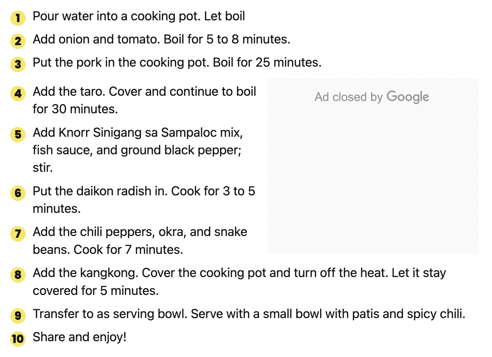
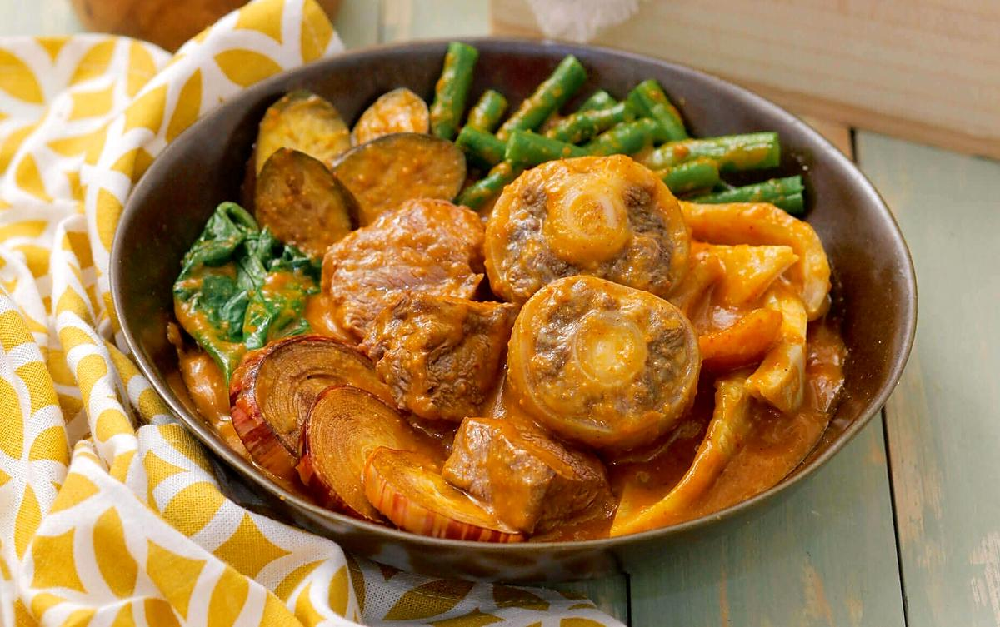

Homey, bold, and full of nostalgia? Yessir! With these recipes, you can experience that feeling once again!
Delicious quick-to-eat delicacies for a filling Merienda!
| Saging con Yelo | Ingredients | Recipe |
|---|---|---|
| 4 to 6 pieces ripe saba banana peeled, 3/4 cup brown sugar, 1 1/2 cups water, 1 teaspoon vanilla extract or vanilla essence, 1/4 teaspoon salt, 1 1/2 cups shaved ice, and 1/4 cup evaporated milk |
| Buko Pandan | Ingredients | Recipe |
|---|---|---|
| 20 ounces young coconut strips, 250 ml Nestlé All-Purpose Cream, 150 ml Nestlé Carnation Condensada, 1/2 cup sago pearls cooked (optional), 2 cups water, 3 ounces powdered gelatin, 1/2 lb. pandan leaves, 1/4 cup sugar, and 1/2 teaspoon buko pandan flavoring |
| Turon | Ingredients | Recipe |
|---|---|---|
| 6 pieces bananas saba, 1 cup jackfruit ripe, sliced, 1 1/2 cup sugar,lumpia wrapper, and 2 cups cooking oil |
Delicious home-cooked meals for everyday life!
| Sinigang na Baboy | Ingredients | Recipe |
|---|---|---|
| 2 lbs. pork belly sliced into cubes, Kangkong leaves, Long Green chilli (optional), Tomatoes, Radish (labanos), 10 to 12 pieces snake beans cut in 2 inch length pieces, 1 piece onion quartered, Okra, Water, Sampaloc or Sinigang Mix, 3 tablespoons fish sauce patis, 1/4 teaspoon ground black pepper |  |
| Kare-Kare | Ingredients | Recipe |
|---|---|---|
|  | 3 lbs oxtail cut in 2 inch slices you an also use tripe or beef slices, 1 piece small banana flower bud sliced, 1 bundle pechay or bok choy, 1 bundle string beans cut into 2 inch slices, 4 pieces eggplants sliced, 1 cup ground peanuts, 1/2 cup peanut butter, 1/2 cup shrimp paste, 34 Ounces water about 1 Liter, 1/2 cup annatto seeds soaked in a cup of water, 1/2 cup toasted ground rice, 1 tbsp garlic minced, 1 piece onion chopped, salt and pepper | |
| Sisig | Ingredients | Recipe |
|---|---|---|
| 1 lb pig ears, 1 lb. pig snout, 1 lb pork belly, 2 pieces onions minced, 3 pieces bay leaves, 2 teaspoons salt, 4 thumbs ginger crushed, 1 quarts water |